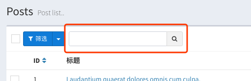

Since v1.7.0
Quick Search is another table data search method other than filter, which is used to quickly filter the data you want. The way to open it is as follows:
$grid->quickSearch();A search box will appear in the header:

Set different search methods by passing different parameters to the quickSearch method. There are several ways to use them.
The first way, by setting the field name for a simple like query
$grid->quickSearch('title');
// After submitting the model will execute the following query
$model->where('title', 'like', "%{$input}%");Or do a 'like` query on multiple fields:
$grid->quickSearch('title', 'desc', 'content');
// After submitting the model will execute the following query
$model->where('title', 'like', "%{$input}%")
->orWhere('desc', 'like', "%{$input}%")
->orWhere('content', 'like', "%{$input}%");The second way gives you more control over your search criteria.
$grid->quickSearch(function ($model, $query) {
$model->where('title', $query)->orWhere('desc', 'like', "%{$query}%");
});The parameter $query of the closure is filled in for the content in the search box, and the query in the closure is submitted after the submission.
The third way is to refer to the search syntax of Github for quick search. The calling method is as follows:
/ / Do not pass parameters
$grid->quickSearch();Fill in the contents of the search box according to the following syntax, after the submission will be the corresponding query:
title:foo,title:!foo
$model->where('title', 'foo');
$model->where('title', '!=', 'foo');rate:>10, rate:<10, rate:>=10, rate:<=10
$model->where('rate', '>', 10);
$model->where('rate', '<', 10);
$model->where('rate', '>=', 10);
$model->where('rate', '<=', 10);status:(1,2,3,4), status:!(1,2,3,4)
$model->whereIn('status', [1,2,3,4]);
$model->whereNotIn('status', [1,2,3,4]);score:[1,10]
$model->whereBetween('score', [1, 10]);created_at:date,2019-06-08
$model->whereDate('created_at', '2019-06-08');created_at:time, 09:57:45
$model->whereTime('created_at', '09:57:45');created_at:day,08
$model->whereDay('created_at', '08');created_at:month,06
$model->whereMonth('created_at', '06');created_at:year,2019
$model->whereYear('created_at', '2019');content:%Laudantium%
$model->where('content', 'like', 'Laudantium');username:/song/
$model->where('username', 'REGEXP', 'song');Please use MYSQL regular syntax here
You can implement AND query of multiple fields by separating multiple search statements with commas, such as username:%song% status:(1,2,3), after running, the following search will be run.
$model->where('username', 'like', '%song%')->whereIn('status', [1, 2, 3]);If a condition is an OR query, just add a | symbol before the statement unit: username:%song% |status:(1,2,3)
$model->where('username', 'like', '%song%')->orWhereIn('status', [1, 2, 3]);If the filled query text contains spaces, you need to put it in double quotes: updated_at:"2019-06-08 09:57:45"
If it is not convenient to get the field name, you can directly use the label name as the query field.
// For example, the header column of `user_status` is set to `user state`.
$grid->column('user_status', 'user status');Then you can fill in the user status: (1, 2, 3) to execute the following query
$model->whereIn('user_status', [1, 2, 3]);